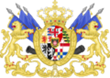

A név jelentése:
A Szárd-Piemonti Királyság neve Szardíniáról származik, de a központja valójában Piemontban, Torinóban volt. A királyságot a Savoyai-ház vezette, egy régi, nagy múltú uralkodócsalád.
A létrejötte:
A története a 18. században indult. A spanyol örökösödési háború után a Savoyaiak először Szicíliát kapták meg, majd 1720-ban elcserélték azt Szardíniára, így lettek Szárd királyok. Bár a név a szigetre utalt, a tényleges központ mindvégig Piemont maradt, ezért nevezzük ma Szárd-Piemonti királyságnak.

Az egységes Olasz állam létrejöttében játszott szerep:
A 19. század közepére ez az állam lett az olasz egység, vagyis a Risorgimento (ujjászületés/feltámadás) mozgalom vezetője. A király, II. Viktor Emánuel, és miniszerelnöke, Cavour gróf, ügyes diplomáciával és háborúkkal terjeszették ki a területet. 1859-ben sikerült kiszorítani az osztrákokat Lombardiából, Közben Garibáldi híres „ezre” (serege) meghódította Dél-Itáliát, és ezek a területek is csatlakoztak az államhoz. Végül 1861-ben megszületett az Olasz királyság, amelynek első királya II. Viktor Emánuel lett.